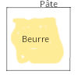

Recette pour 2 plaques de four (environ 18 brioches)
Ingredienti
500 g di farina di grano intero
10 g di lievito secco
60 g di zucchero
2 cucchiaio da tavola di cannella
10 g di sale
260 ml di latte
2 uovi
160 g di burro morbido
Raisins secs
Tappe per la pasta
La recette est très similaire à celle des cornetti. Les modifications importantes sont que la pâte doit être repliée plusieurs fois de plus sur elle-même et le beurre doit être plus mou.
La pâte! Chauffer le lait 35 secondes au micro-onde. Casser les 2 oeufs et brasser. Ajouter le sucre et la levure et brasser. Attendre 5 minutes. Ajouter la farine et mettre au robot. Laisser le robot travailler pendant 3 minutes ou jusqu'à ce que la pâte soit homogène. Mettre en boule et laisser reposer 1 h dans le four avec la porte fermée et la lumière allumée.
Quand la pâte a doublé de volume, la malaxer quelques instants pour la faire retomber puis la placer au réfrigérateur pendant 30 min.
Sortir le beurre du réfrigérateur à l'avance. Sinon, briser le beurre à la main. Beurrer la pâte : étaler la pâte sur un plan de travail fariné à l'aide d'un rouleau à pâtisserie fariné. Attention au beurre qui ne doit PAS être trop mou !! Il doit avoir à peu près la même consistance que la pâte : le déposer au milieu sur la pâte en l'étalant, sans en mettre sur les bords.

Envelopper le beurre avec la pâte et bien souder les bords.
Le feuilletage : allonger la pâte au rouleau en faisant attention de ne pas laisser échapper le beurre. Commencer par allonger en partant du milieu pour former un grand rectangle assez long pour que l'on puisse replier en 4 : rabattre les 2 extrémités vers le centre, puis replier en 2. Tourner la pâte pour avoir la pliure à droite
Stendere l'impasto in un grande rettangolo, e piegare 2 altre volte. Alla fine, l'impasto sarà stato piegato 4 volte. Ceci rendra le résultat final plus compact, mais aussi plus brioché.
Laisser reposer 30 min au réfrigérateur pour raffermir car le beurre a tendance à fondre. Ne pas hésiter d'ailleurs à mettre la pâte au réfrigérateur au cours des pliages si on sent qu'elle est trop molle
Étaler la pâte finement, régulièrement, selon un rectangle d'environ 40 x 50 cm pour la découper en 2 bandes d'environ 20 cm x 50 cm et faire des rectangles de la taille désirée. Saupoudrer chaque rectangles de cassonnade et de raisins secs. Rouler les brioches.
Préparer 2 tôles beurrées ou recouvertes de papier cuisson. Y déposer les brioches. (environ 9 par plaques) en les espaçant un peu.
Les laisser gonfler environ 1h dans le four avec la lumière allumée.
Utiliser un pinceau pour étendre le dernier oeuf battu sur les brioches. Ceci les fera dorer.
Préchauffer le four à 325°F convection. Cuire tout juste 10 minutes. Faire attention aux cornetti proches de la porte, ils vont brûler vite!
Ricetta di cornetti